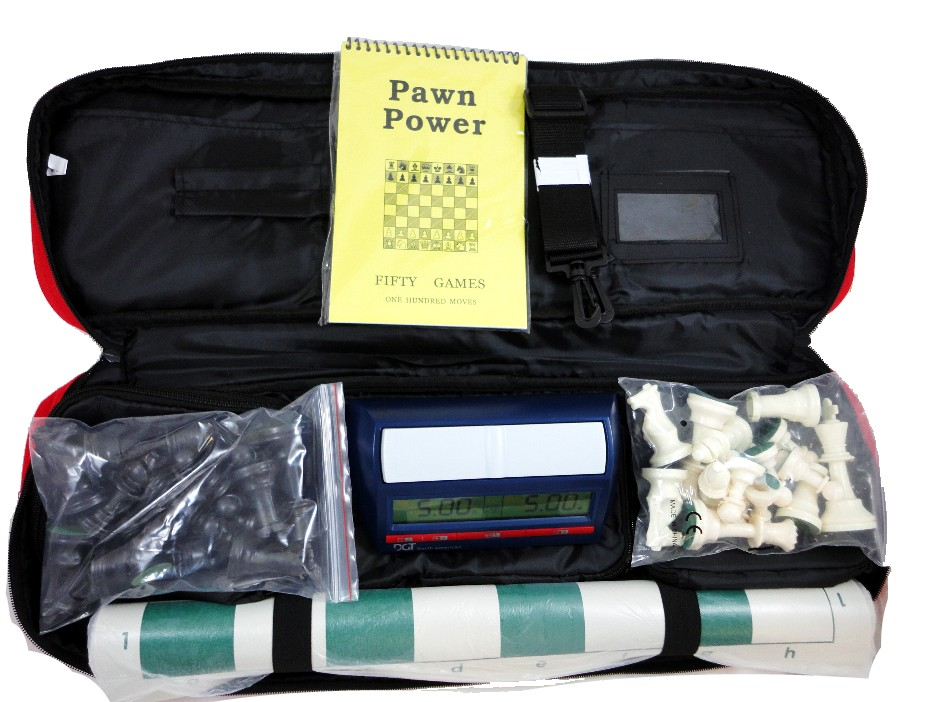

Full Chess Set: A solid choice
Whether if you are an experienced chess player or just a beginner, every player needs a few things to get started: a board to play on, game pieces to put on the board, a clock to keep time, and a score sheet to write down your moves. In this chess set, you receive all of the things you need to play. The set comes in different colors and gives a choice of different scorebooks, but in this review, I will be reviewing it with the default score book. This set costs $90 dollars, which is a very reasonable price for what is included. Today, I will be reviewing this full chess set.
Firstly, let’s talk about the board. This is a tournament size board with 2 ½ inch squares. This means you will be able to play on your board if you choose to play in a tournament, since boards and pieces are required to be larger than most common chess sets. The board is made of vinyl, so it is very durable and resistant to wear and tear. Many of the boards my local clubs chess sets are several years old and are still holding up quite well.
Next, the pieces. These pieces are quite big with a 3 ¾ inch king. This is much larger than most common pieces, which makes for a much better playing experience when playing long games. In my personal experience, playing for long periods of time with larger pieces is much more pleasant, but of course, this is up to personal preference. The pieces are made of plastic, which feels to the hand better than rubber but not as nice as wood. These pieces are weighted so it is a nice middle ground between quality and price.
The clock that comes with the set is a standard tournament clock. At any tournament you attend, a physical clock will be required. This is the most common clock used at tournaments so although it might be a bit difficult to configure it, there will usually be someone at the tournament hall willing to help you. If you plan to use this for personal use, I recommend just using a free app on your phone, since it is much easier to configure, and you likely already have a phone. Some people prefer a physical clock to use while playing to eliminate distractions or to free up their phone, it is ultimately personal preference.
Another item included is the scorebook. You may not actually use this scorebook unless you are playing serious games and you would like to record them to review later. It’s not really essential but it is very useful when looking through old games to improve. This scorebook is a softcover and can only store 50 games. A scorebook that I bought when I went to my first tournament was a hardcover and had space for 100 games, which is much nicer.
Lastly, the bag. Most chess bags come in two types: tournament bags and quivers. This bag is a tournament bag and it has a few advantages over quivers, namely that it has more space and compartments and is generally more durable in personal experience.
Lastly, the bag. Most chess bags come in two types: tournament bags and quivers. This bag is a tournament bag and it has a few advantages over quivers, namely that it has more space and compartments and is generally more durable in personal experience.
Every component of this chess set is of good quality and will prepare you for your future in chess. I would rate it a solid 4/5 stars, given that it is a bit expensive because of the clock. The only thing I would change about this set is using a cheaper clock since most people don’t need this sophisticated of a clock, even with tournament play.
